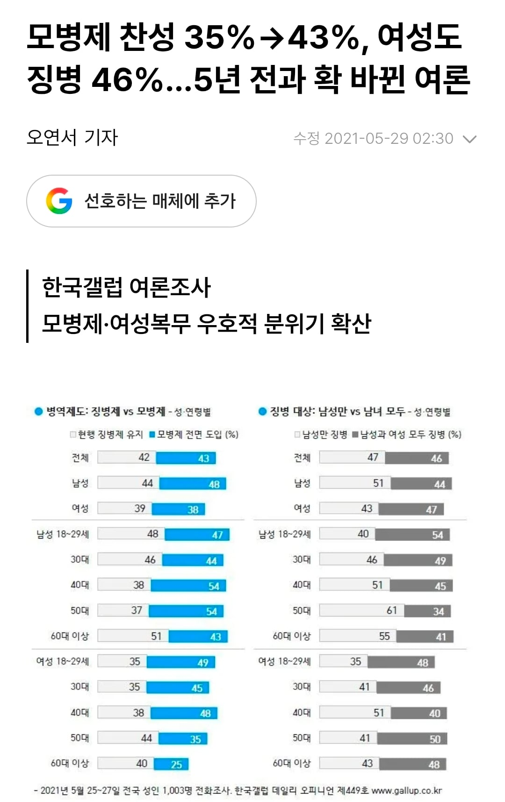
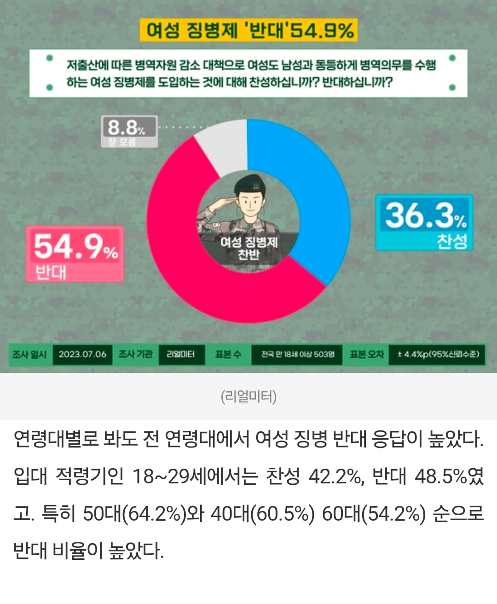

난 왜 못가겠다는 여성들보다
405060 스윗한남틀딱들이 더 ㅈ같을까


난 왜 못가겠다는 여성들보다
405060 스윗한남틀딱들이 더 ㅈ같을까
여론 바뀐 이유가 병 월급 상승때문일거라고 예상한다 ㅋㅋㅋ
40~50대의 자식의 절반은 딸이기 때문이지
이게 정답
내가 독박으로 군복무한것도 억울한데 내딸이 가는건 더 독박쓰는 느낌이 들어서이겠지.
스윗한 분들 재입대가 답이다. 스윗하게 여성 대신 흑기사할 수 있는 영광을 선사하자.
스윗한게 아니라 이제 딸들이 입대 가능성이 생겨서 반대하는거일듯. 스무스하게 넘어가면 남의 딸은 또 보낼려고할껄 ㅋㅋ
징병까지는 합의가 어렵다면 모병으로 해서 행정, 청소, 취사 같은거만 전담시켜도 좋을거같은데
아니 그냥강제로끌고가서 모두에게햇던것처럼 굴리면됨 시설이안되잇다 설비가안되잇다는데 누군 있엇나 한명의국민으로써 의무를다하는게맞음 아니면 미필자권한을축소하던지
출산하면 군면제해주면 되잖아 존나 윈윈아님?
꼬우면 출산해 버러지년들아
니가 "405060 스윗한남틀딱들이 더 좆같다"
생각하는건...
니가 그냥 너보다 나이 많으면 혐오하는
놈이라 그런거임
18세~29세 남자도 무려 40%가 남자만
병역부과 하라는거 안보이지?
여경은 치안에 도움이 안된다고 게거품 물면서 여자도 군대가라고 하는건 솔직히 안보니 재정이니 관심 없고 걍 나만 가는거 좃같으니까 가라는거잖아ㅋㅋ
네가 말한 두 집단은 서로 같지 않을 가능성도 높다. 그리고 설령 같다고 하더라도 그 근본은 형평성에 대한 의문 제기다.
여경은 남경과 채용 기준이 똑같았다면 저런 말이 안나왔을텐데 기준 자체가 달라서 여자를 대거 뽑은 다음에 편한 곳에 배치하고, 설령 일선에 나간 경우에도 실력부족으로 사건이 터지니 저 말이 나오는거고. 만약 똑같은 기준이라면 저 말이 거의 안나왔겠지.
그리고 설령 표현을 ‘군대 나만 가는거 좆같으니까’ 라고 했어도 그건 한쪽 성별에만 부여된 의무가 형평성에 맞지 않다는 것이 주요 골자다.
문제제기를 한 배경을 봐야지 일부러 표현을 뒤틀리게해서 모순적인 것으로 생각하면 안되지.
네가 말한걸 보니 예전에 방송인 이현이가 나와서 말한게 오버랩되네.
자기나라 자기손으로 지켜야지 그럼?
의무랑 선택이랑 비교하고 자빠졌네 ㅋㅋㅋ
의무와선택의차이지 병사가할수있는건 개나소나 교육 반복숙달로 되는거지만 대체안되는전문성이있어야할자리에 기준까지다르게해가면서 이악물고할당제? 그건아니지
병신ㅋㅋ
다 떠나서 통계적으로 큰 차이도 없고 40이 넘는 숫자는 현실정치에서 어마어마한 반대장벽이 되는데
뭔405060이라고 숫자를 잘라서 혐오하기위한 혐오를 하냐
가장 보편적 관점에서 혐오스러운게 글쓴이임
담백하게 말해서 히틀러가 이런 사람들이 많아서 선동에 성공한거임
여자군대안가도 되는데 ㅅㅂ 군인 존중이라도 해줬으면 좋겠음
나는 모병제 찬성이라는 새끼들 이해가 안됨 모병제 되면 본인 조차 안갈꺼면서 누가 갈꺼라고 모병제 찬성함?
아니 여자만 군대가야한다는 아예 선택지에 없냐?
대한민국창설이래 70년동안 과거세대 남성만 병역을 했으니 앞으로 70년은 공평하게 여성만 해라.
이게 페미니즘 근본사상아니냐?
ㄹㅇㅋㅋ 여성독박징집제좀 더많은권리를 가지고태어나니
요즘 부모세대들은 더이상 자식들이 군대가는걸 선호하지 않음 예전에야 군대가서 남자 되고 어쩌고 가오잡았지
사고나도 나몰라라 하는 뉴스가 너무 꾸준히 퍼져서 조금만 생각 있어도 보내고 싶어하지 않음
그와중에 준비도 언되어있는데 딸까지 보낸다? 뭔일날줄 알고 이런 느낌인데
여성 모병제는 이미 있잖아
징병으로 군인숫자 모자라는거의 대안이 모병제라고?
이게 말이되냐?
전쟁중에 행군하다가 길거리에서 커피마시는 모습보이면 쏴죽인다
딸 가진 405060은 한번더 가는걸로 하면 좋을듯??ㅋㅋㅋ
최소한의 양심이있다면 그게 맞아보이는데
405060 한남이 나라지켜주던 시절은 생각도 못하네ㅋㅋㅋ
모병제로 전환해서 국방비 증액되면 군필자는 병역도 하고 증세까지 뚜드려맞으란 소리임?
모병제 전환하면 미필자한태 병역세 따로 걷더라도 도비탄 마냥 스플뎀들어옴, 여성징병은 무조건해야지
딸병신 세대 ㅋㅋ
계집애 강제빙용해야지 만 45세까지 애 안낳은넌들 대상으로
ㅅㅂ 노괴년들 이제 지들 안 갈 수 있는 나이 되니까
ㅈ돼봐라 하고 찬성 놓네 ㅋㅋㅋㅋㅋㅋㅋㅋㅋㅋㅋㅋㅋㅋㅋㅋㅋㅋㅋㅋㅋㅋㅋㅋㅋㅋㅋㅋㅋㅋㅋㅋ
일단 보내라고 시발
당장 개드립도 딸 가진 스윗포티햄들 우리딸 군대 못보내! 하는데 아들은 보내고싶어서 보냈냐?ㅋㅋ
내 복무 때 여자가 안가는것도 젖같은데 이제 나 복무끝나고 딸 낳아놓으니까 여자 보낸다고하면 더 독박으로 느끼는것이지. 걍 첨부터 남녀 전부 군복무로 갔어야함. 종전도 아닌 분단국가에서 무슨 남자만 군복무여..
병무청에서 꿀빠는 여성공무원들 부터
강제징집 해야지
지금 반도체 업계 사람 존나 뽑는데
이젠 공무원도 미달인 판국에 군모병제 잘도 지원하겠다 ㅋㅋㅋ